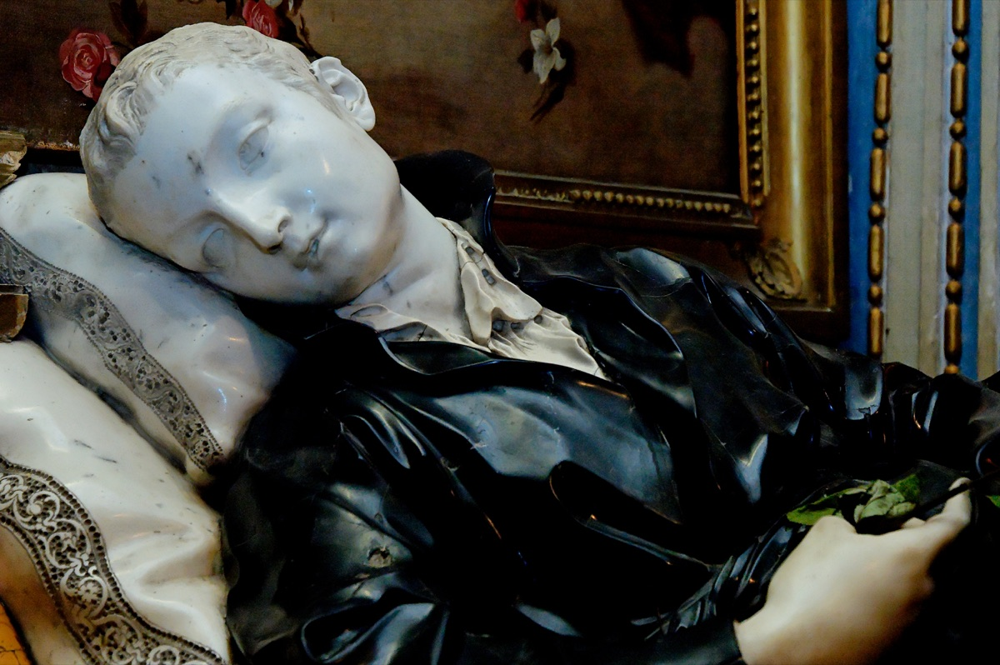

Isusovačka mladež (Zaštitnici studenata i novaka)
Novak
Sv. Stanislav Kostka
1550. – 1568.
Mladi Poljak iz plemićke obitelji osjetio je redovnički poziv usred školovanja kod isusovaca. Njegov kratak život ostao je zapamćen po molitvi, vedrini i ustrajnosti s kojom je tražio svoj put.

Izvor slike
- Spomendan
- 13. studenoga
- Zaštitništvo
- Poljska · Isusovački novaci · Studenti · Mladež · Bolesnici koji primaju posljednju pomast
- Životni vijek
- 1550. – 1568.
- Slavi se
- 13. studenoga
Životopis
Današnji sveti zaštitnik, Stanisław Kostka, isusovački novak, rodio se 28. listopada 1550. u poljskom selu Rostkowu nedaleko Przasnysza (Mazovjecko vojvodstvo) kao senatorski sin u krilu bogate, moćne i ponosne plemićke obitelji. Odgojen u vjerskom duhu, sa 14 godina poslan je 1564. zajedno sa starijim bratom Pawełom i odgojiteljem na daljnje školovanje u isusovački kolegij. Za vrijeme trogodišnjeg školovanja isticao se svojom ljubaznošću, vedrinom, pobožnošću i molitvenim žarom. Odgojitelj braće Kostka bio je sklon laganom, udobnom i rasipnom životu te nije previše brinuo za svoje učenike. Stariji brat se priklonio odgojitelju, ali pobožnom i marljivom Stanisławu to nije odgovaralo. Prema legendi, teško je obolio, ali nitko nije brinuo za njega pa se pomolio svojoj zaštitnici, svetoj Barbari, koja ga je u pratnji dvojice anđela pričestila. Ukazala mu se Gospa s Djetetom u naručju, izliječila ga od bolesti i preporučila mu da postane isusovac, protiv volje njegove obitelji.
Jednog jutra, nakon bratovog zlostavljanja, prerušen u prosjaka potajno je napustio Beč i uputio se u Bavarsku gdje je u Dillingenu pronašao njemačkog isusovačkog provincijala, svetog Petra Kanizija. On se uvjerio da se kod Stanisława radi o pravom zvanju i poslao ga krajem listopada 1567. generalu Družbe Isusove Franciscu Borgiji u Rim. U Rimu je Stanisław započeo svoj novicijat. Bio je u svakom pogledu uzoran: šutljiv, čedan i poslušan. Nježna zdravlja, razbolio se i umro od groznice 15. kolovoza 1568, na Veliku Gospu, a nije još navršio ni 18 godina. Pripisuju mu se mnoga čudesa. Blaženim ga je 1605. proglasio u nazočnosti brata Paweła papa Pavao V, a svetim 1726. papa Benedikt XIII. Zazivaju ga pri prijelomu kostiju, ubrzanom kucanju srca i opasnim bolestima, a zaštitnik je Poljske, isusovačkih novaka, studenata, mladeži i bolesnika koji primaju posljednju pomast. Posvećene su mu mnoge župe i crkve diljem Poljske i svijeta.